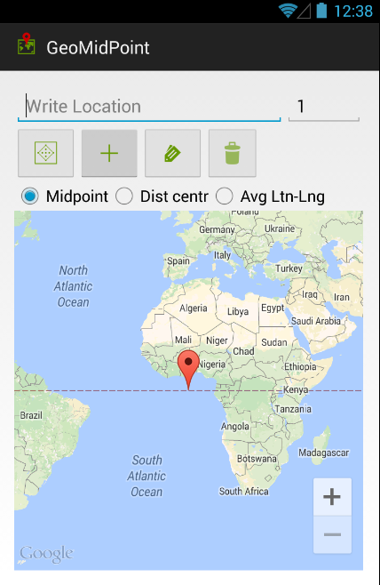
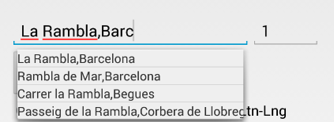
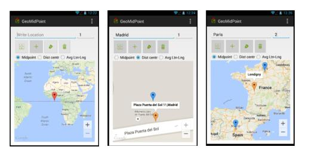
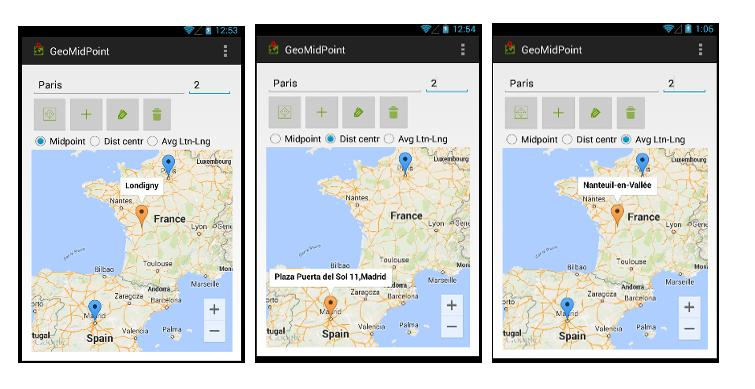
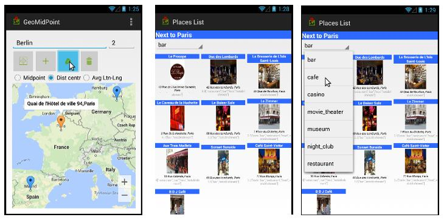
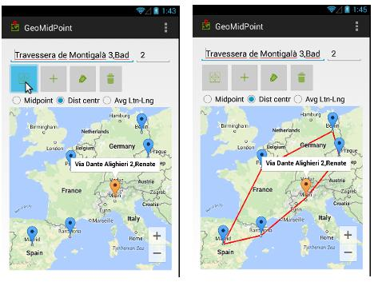
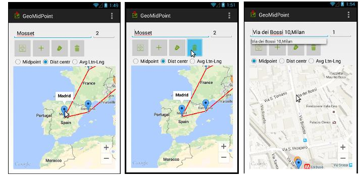

AYUDA
La aplicación GeomidPoint, también es una aplicación sencilla, trata de resolver el problema del punto medio geométrico de un número determinado de puntos. Se le ha encontrado una aplicación práctica, para resolver el problema de un grupo de amigos que quieren juntarse en un punto medio.Esta aplicación tiene como origen la web http://www.geomidpoint.com/
La aplicación nos muestra el siguiente menu nada más empezar:

Donde se distinguen 4 areas:
El título GeoMidPoint de la aplicación.
La barra de busqueda de direcciones.
La linea de botones de acciones
El mapa de google maps embebido.
Inserción de un punto
Para añadir un nuevo punto o localización al mapa, hay dos formas:
Buscando en la barra de direcciones poniendo la dirección completa o parcial de la persona. Según vayamos rellenando la dirección nos irán apareciendo distintas selecciones.

Pulsando en la calle dentro del google maps.
El cuadro de texto nos va ayudando a completar las direcciones. Despues para ir añadiendo direcciones al mapa, pulsamos el botón + .
Según vamos añadiendo direcciones, estás se van dibujando en el mapa con una señal en azul y el punto medio es calculado y dibujado con una señal en naranja.

El
punto medio lo podemos calcular con 3 algoritmos:
Punto medio: calculado como el centro de gravedad de todas las direcciones introducidas.
Distancia mínima: calculada como el punto para el cual los trayectos desde los otros puntos son mínimos.
Media de latitud y longitud: media ponderada de las langitudes y longitudes de las direcciones introducidas.
según vamos “clickando” en los distintos algoritmos el geomidpoint, irá cambiando de lugar.

La siguiente acción que podemos hacer es conocer los places cercanos al punto medio, para eso una vez calculada un punto medio. Para realizar esta acción podemos pulsar en el botón
.

Dentro la lista de places, obtenemos información de los lugares, o podemos cambiar el tipo de place a buscar .Podemos elegir entre diversas categorias ( bares, cafes, casinos, cines, teatros, museos, pubs y restaurantes). La búsqueda esta hecha a traves del api de google places y está hecha por cercanía.
Otras acciones que podemos realizar es encontrar el cierre convexo de un conjunto de puntos.

Borrar
puntos o añadir puntos desde el mapa.
